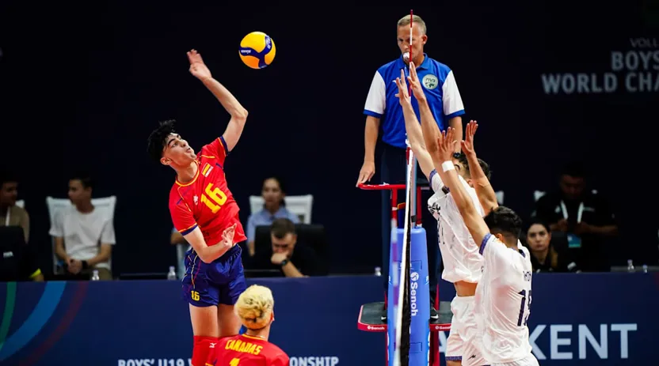

Aprendizaje de Voleibol
Fecha: 19 de octubre de 2024
El voleibol es un deporte que me fascina. Aunque empecé a jugarlo hace relativamente poco, ya tenía algunos conocimientos desde antes, sobre todo por ver partidos y jugar alguna partida ocasional con amigos. Cuando comencé a jugarlo más a menudo, me di cuenta de lo divertido, dinámico y completo que es. Me encanta la sensación de trabajar en equipo y coordinar movimientos con los compañeros. Es un deporte que te mantiene alerta, te enseña a reaccionar rápido y sobre todo, a disfrutar del momento. Cada partido es una nueva oportunidad para mejorar, divertirme y pasar un buen rato con mis amigos.
Posicion de los miembros del equipo
| Posición | Descripción |
|---|---|
| Armador | Responsable de organizar el ataque |
| Libero | Defensa y recepción |
| Colocador | Responsable de guiar la pelota hacia el remate |
| Rematador | Ataque |
| Bloqueador | Defensa y evita que la pelota cruce al campo aliado |